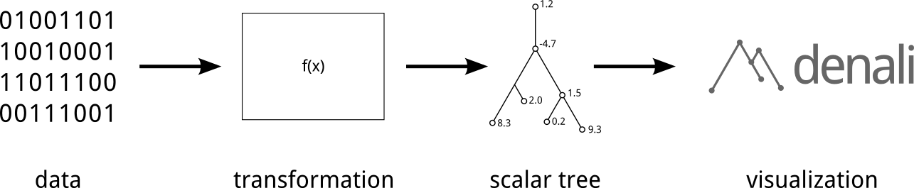

denali is a tool for visualizing scalar functions defined on trees,
graphs, and point clouds as mountainous terrains. Denali helps you discover
trends in complex and high dimensional data.
- Windows v1.0 (64 bit, binary)
- Ubuntu Linux v1.0 (64 bit, binary)
- Build v1.0 from source for Windows or Linux
- Get the bleeding-edge source from GitHub
Many sources of data — from complex networks to probability distributions — can be represented by tree-like structures. These trees, however, are often complicated and difficult to visualize. Moreover, it is often the case that one not only wants to visualize the tree-like structure of his or her data, but also a scalar attribute on top of it. Traditional methods, such as simply plotting the tree as a graph in the plane, offer limited opportunities to do so.
Denali is a tool for visualizing trees as landscape metaphors — mountain-like surfaces which intuitively represent both the structure of complicated trees and scalar attributes defined on their nodes. To learn more about landscape metaphors, see the tutorial.
Can denali be used for your application? Denali requires its input to be in the form of a scalar tree — a tree whose nodes are associated with scalar values. Included with denali are tools to extract scalar tree structure from graphs and point clouds, allowing denali to be used to visualize many different sources of data.

- Explore your data by using the mouse to fly through an interactive 3d landscape.
- Selectively simplify regions of the visualization to discover important trends.
- Interactively choose parts of the data to run domain-specific analyses on.
- Specify a custom method of coloring the visualization, useful for comparing two scalar functions.
- Re-weight points in the input data to alter their influence on the visualization.
- The suite of included tools and utilities allows you to prepare your data for visualization.
-
Probability Densities
Visualize a mixture of Gaussians in four dimensions as a landscape. Clicking on a part of the landscape automatically resamples the pdf in the region corresponding to the selection and redraws the visualization. -
Neural Network Models
Explore the parameter space of a neural network model trained to represent the sine function. Local minima of the cost function are represented as plateaus in the landscape. Clicking on a component in the visualization evaluates the corresponding model and plots its output, comparing it to the ideal sine function. -
Internet Comment Threads (Pictured)
Visualize the structure of an online comment thread as a landscape. Use colors to find controversial comments. Clicking the landscape prints the corresponding comment to the screen. -
Hierarchical Clusterings
Gain an understanding of the structure of your high dimensional data by visualizing the tree produced by a hierarchical clustering algorithm. This demo clusters images of handwritten 0's, 1's, and 7's. Clicking a component of the landscape displays an average image of the digits which exist in that region. -
And more...
doc subfolder of your download),
or online, here:
- For the detailed and complete guide to using denali, see the main documentation.
- If you're looking for a quick-start guide, see the tutorial.